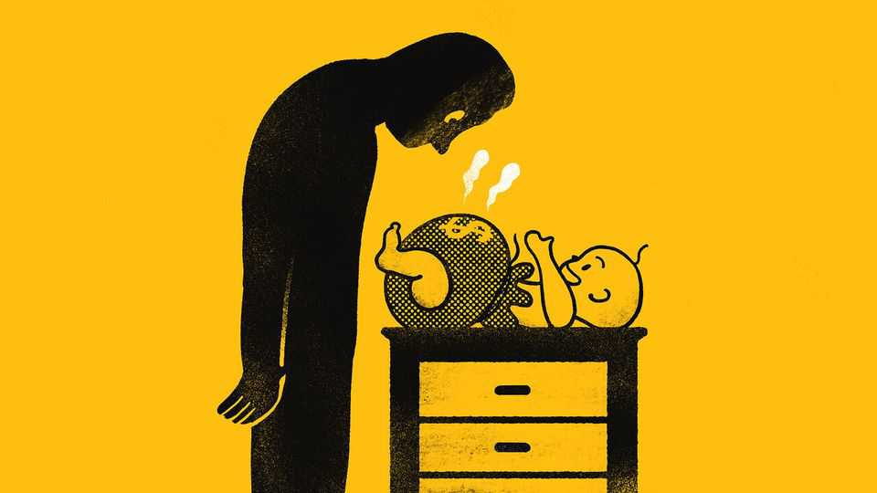

Investing for babies involves knotty trade-offs
Should new parents favour financial capital, human capital or something else?

Oct 1st 2026
PATIENCE, CONSISTENCY and frugality are fine habits for an investor. They are not, however, common virtues among newborn babies. The little bundles of joy are impulsive short-term thinkers. They are also some of nature’s biggest freeloaders, living entirely beyond their means.
All the same, for new parents with a soft spot for the magic of compounding, like your columnist, a baby presents a tantalising investment opportunity. Many decades of life and potential returns stretch out into the future: $1,000 invested today with a real annual return of 5.2% (the average for global stocks over the past 125 years) would be worth $58,000 by the time the child is 80.
Yet these juicy financial returns must be considered alongside another sort of investment: in the children themselves. Spending on a child’s health, education and skills can yield even higher returns (on top of helping them lead a fulfilling life). So how should a new parent think about their budding little portfolio?
Potential financial investments are manifold. Many countries offer tax-advantaged ways for parents to save for their children. American tykes are now eligible for Trump accounts, which start with a $1,000 freebie from the federal government that can be put into mutual funds or index trackers until the child turns 18, while taxes are deferred. Earlier options include the even more tax-friendly 529 accounts, but these may be used solely for specified educational purposes. In Britain, the Junior Individual Savings Account, into which up to £9,000 ($11,900) a year can be invested, is tax-friendlier still.
Investing for babies is a joy even without the tax perks. Long horizons smooth out volatility, allowing for more risk. Ian Ayres and Barry Nalebuff, two economists, propose that young workers should borrow to buy stocks, since the long-term returns to equities are (hopefully) higher than the interest on borrowing. If the logic is true for 20-somethings, it is truer still for infants with a horizon a couple of decades longer.
Some parents fear that creating a large trust fund will turn their offspring into layabouts. Andrew Carnegie, a 19th-century American steel magnate, gave away most of his wealth out of fear that it would dull the work ethic of his descendants. A more recent study of Norwegian inheritances between 2000 and 2004 found that those bequeathed NKr300,000 (some $40,000 at the time) or more reduced their working hours by 7-10% in the six years that followed.
This makes investments in human capital more appealing. In the 1970s and 1980s Gary Becker and Nigel Tomes, another pair of economists, theorised that parents were better off investing in education and skills early on. For example, teaching a child to read is not hugely expensive, but opens up huge opportunities for future earnings. Investing in financial assets starts to make sense later, once those human-capital investments encounter diminishing returns. A wealth of empirical evidence has since backed up the theory.
Beyond basic skills, however, investing in human capital gets fraught. Such investments are sunk costs that cannot be liquidated. They are also infungible: tutoring in advanced maths is not the same as Chinese lessons. Children react differently (and unpredictably) to each. The extraordinarily long timeframes that make investing for babies attractive also raise uncertainty. Perhaps the skills that are valuable today will be obsolete in an AI future?
So what is a new parent to do? The most obvious financial options involve accepting free money. The $1,000 in a Trump account is a no-brainer. Even rabid anti-Trumpers would be mad not to take it. All parents should also accept similar grants from several American states. Those who expect to be on the hook for university tuition would be wise to take advantage of 529 accounts or similar vehicles as early as possible, so that compounding can work its magic to the full. Any money that children are likely eventually to inherit is better off in tax-friendly shelters than in their parents’ brokerage accounts.
Investments can misfire: violin lessons may generate little more than screeching and even a modest trust fund could encourage laziness. But with a bit of luck, investing in a child’s future and on their behalf will pay off handsomely. Fortunate parents with the ability to do both should approach this like the rest of parenting: try different things and don’t agonise too much over your decisions. ■